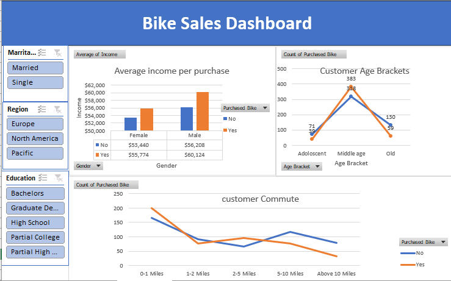

This project focuses on analyzing and visualizing bike sales data to provide actionable insights for business decision-making
The project was designed to provide a comprehensive view of bike sales performance, enabling business owners and managers to track revenue, identify trends, and make informed decisions based on data.
Sales data including bike models, quantity sold, sales date, region, and customer demographics.
Data was collected from internal sales systems and Excel spreadsheets, then cleaned and prepared for analysis.

The dashboard allowed stakeholders to make data-driven decisions, optimize inventory, target high-performing markets, and increase overall sales efficiency.